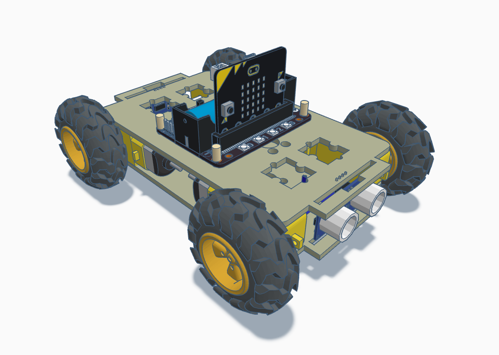
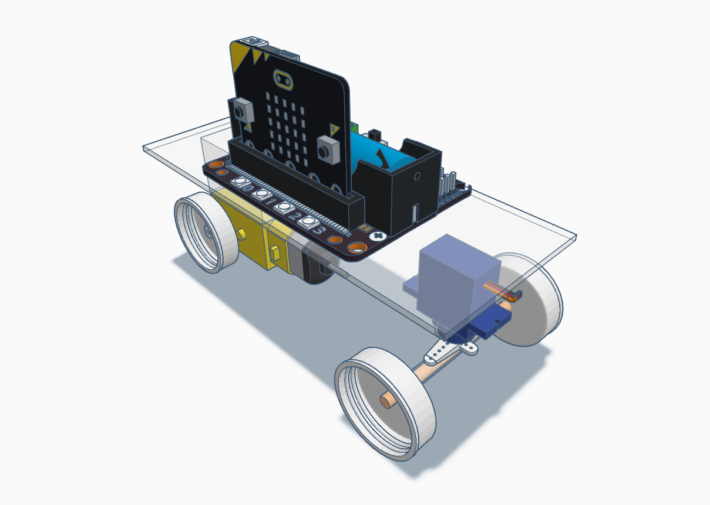
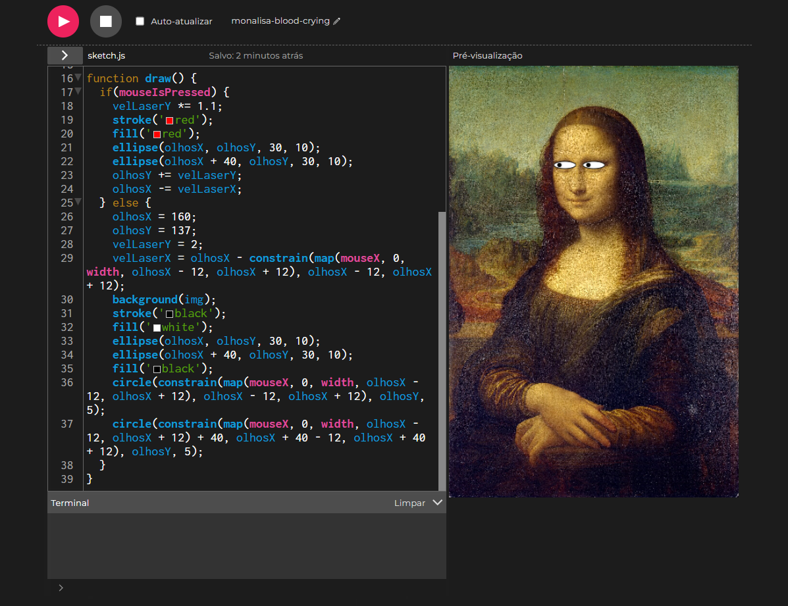
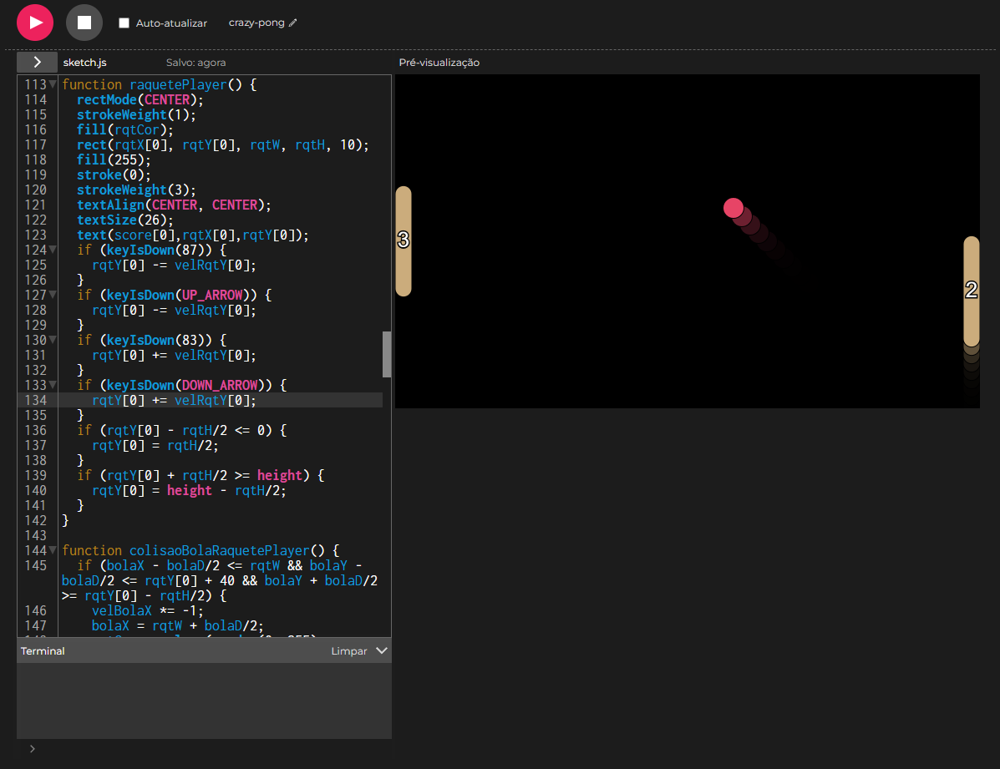
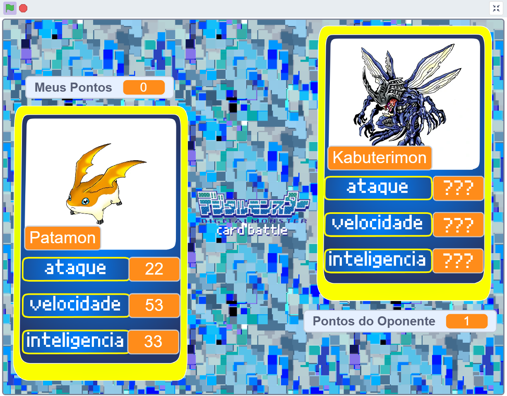
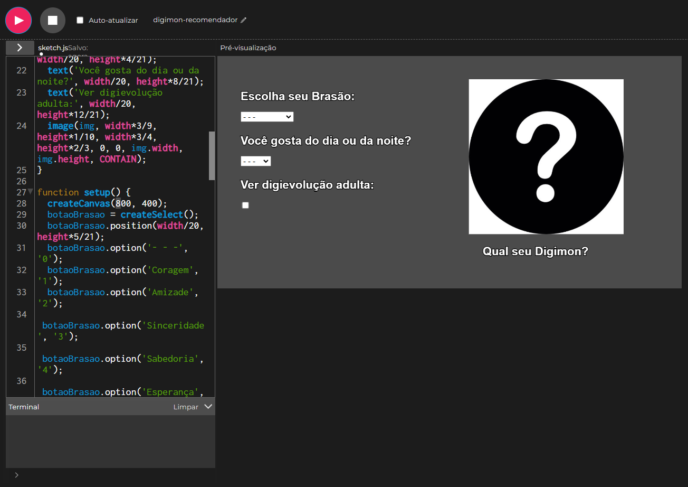

Carrinho de Drift
Carrinho movido por meio de Drift com 4 motores DC.

Carrinho com Eixo
Carrinho feito com materiais não estruturados para utilização com eixo de servo motor e movimentação com motor DC.

Mona Lisa no P5.js
Interação de arte com mouse no P5.js seguindo proposta da alura em 2025.

Pong no P5.js
Jogo feito no P5.js seguindo proposta da alura em 2024.

Digimon no Scratch
Jogo feito no Scratch seguindo proposta da alura em 2024.

Digimon no Scratch
Jogo feito no Scratch seguindo proposta da alura em 2024.